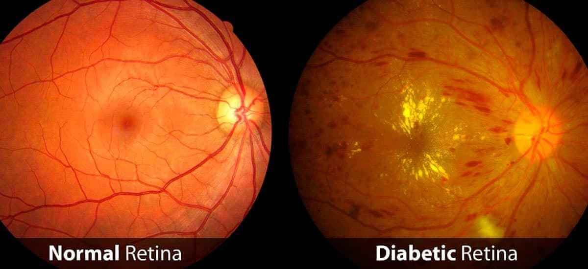
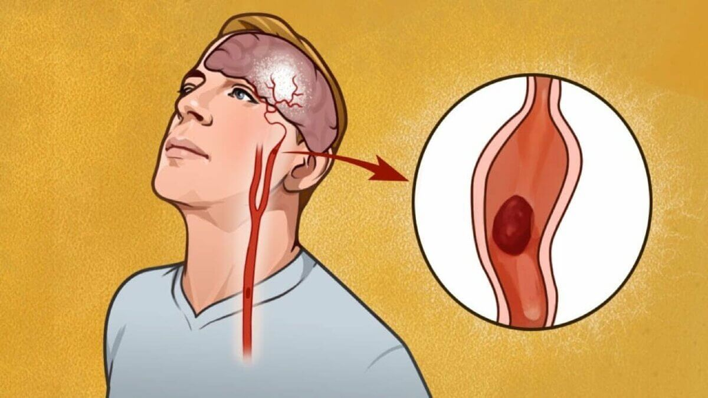
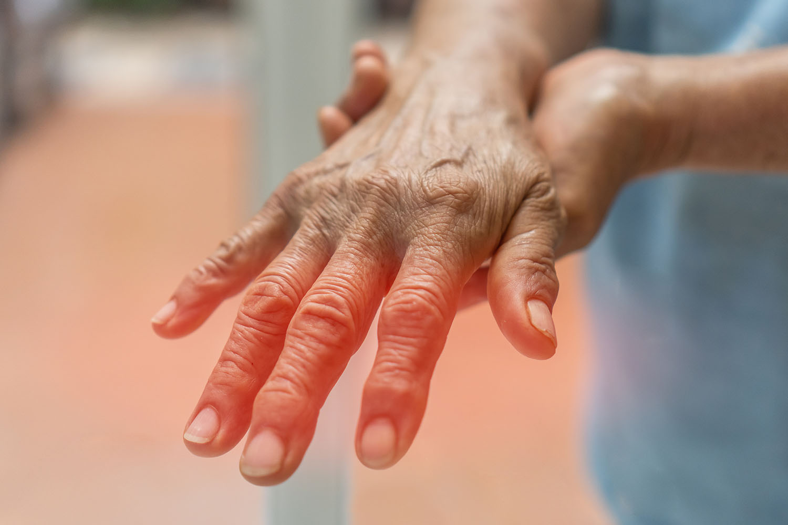
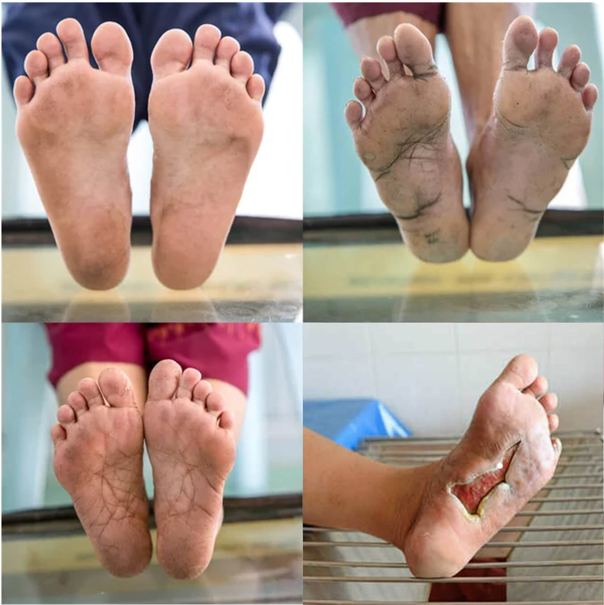

AFTER SUCH VASCULAR CLEANSING, ELDERLY PEOPLE FINALLY GET RID OF HIGH BLOOD PRESSURE AND OTHER 9 SUPPOSEDLY "INCURABLE" DISEASES!

High blood Pressure cannot be avoided, it affects internal organs and leads to rapid death. Seventy-eight percent of people with High blood Pressure die as a result of complications.
Dr. Ronny Jackson: I am personally committed to making sure that every person with High blood Pressure receives this product.
Dr. Ronny Jackson is a nutritionist, and health teacher. Renowned for his groundbreaking work in preventive medicine, steering clear of conventional medication reliance. One of the best High blood Pressure specialists.
His professional experience spans more than 30 years.
Remember, the Truth is simple, don't listen to anyone: you can cure Hypertension and stabilize your blood pressure once and for all, at any age, at any stage of the disease
A program has been launched in United States that allows everyone to get the product at a special price!
A month ago, the national program "US without High blood Pressure" was launched, which seems to combat High blood Pressure and its complications. We have been asked many questions, so today we are talking to the curator of the program, Dr. Ronny Jackson. Dr. Ronny Jackson led the program and was involved in its development, supervising the process. We remind you that the official program has just begun. According to Decree no. 5896, the program provides that every citizen can get the new High blood Pressure product at a reduced price. Delivery takes place throughout US.
Journalist: Hello, Dr. Ronny Jackson, where does the need for a national program financed by the government come from? Are regular medical facilities no longer able to treat hypertension?
Dr. Ronny Jackson: Hello, the health system is too bureaucratic. It is a huge mechanism with many problems. Of course, conventional medical facilities treat hypertension. Unfortunately, they mainly focus on maintaining the body's stability and combating the effects of the disease. It must be understood, however, that special diets, insulin, and medications only give the distant idea of a normal life. However, the disease itself is not treated. The diabetic continues to die slowly.
As a result, many patients do not receive adequate treatment and help. This is because High blood Pressure is a disease that cannot be underestimated in any case, especially if it is compared to cancerous tumors in terms of mortality.
Journalist: Do you think cancer and High blood Pressure can be compared in terms of mortality rates?
Dr. Ronny Jackson:I don't know if they can be compared, but they are also very similar if we look at the mortality rates. The only difference is that High blood Pressure kills much more slowly. The mortality rate, however, for high blood pressire differs little from that of cancer deaths. And while a patient with a malignant tumor is actively treated and fights for life, High blood pressure are mainly limited to special diets. Even in the case of treatment, in most cases we cannot say that everything is done well, as recent events have shown.
The rapid increase in the number of patients worldwide increases the number of deaths.
Journalist: How does High blood Pressure kill? With cancer it is clear, but how does High blood Pressure kill?
Dr. Ronny Jackson:First of all, there are the classic complications of High blood Pressure: diabetic coma, limb necrosis, gangrene, vision loss, impotence, ketoacidosis and hypoglycemia. They usually occur in High blood Pressure and very often their consequences are fatal. But let's analyze the complications of High blood Pressure in more detail:
KETOACIDOSIS
Consequences: loss of consciousness, damage to major organs and death
HYPOGLYCEMIA
Consequences: loss of sensitivity, high Blood pressures in a short time, lack of reaction to light, drowsiness and seizures. In the case of an extreme form of the disease, the patient falls into a coma.
HYPERHOMOSAL COMA
Consequences: increased thirst and frequent urination.
LACTIC COMA
Consequences: loss of senses, damage to the respiratory organs, drop in blood pressure and damage to the kidneys. Plus kidney failure
Journalist: Does the list end here?
Dr. Ronny Jackson: It is only part of the complications that can appear immediately, a few months after the disease develops. In 2-3 years, other complications may occur, such as:
1. Retinopathy: damage to the retina that can later lead to hemorrhage and retinal detachment. over time, this can lead to vision loss. Retinopathy is very common in people with type 2 High blood Pressure. The patient loses sight completely.
2. Angiopathy: vascular permeability is greatly reduced and the vessels become weak. There is a tendency to thrombosis and atherosclerosis. Internal or cerebral bleeding can occur at any time.
3. Polyneuropathy: loss of pain and heat sensation in the limbs. Most often it develops symmetrically and at the same time in the arms and legs. The first symptoms are numbness and burning, which intensifies at night. Conclusion: loss of control over limbs.
4. Diabetic foot: complication involving ulcers, infected wounds and necrosis in parts of the foot. Leads to amputation or death.
Journalist: What should people with high blood pressure do? Hospitals are useless, but the disease must be treated...
Dr. Ronny Jackson: Yes, at first glance the situation is hopeless. Basically, this is the reason why the program was started where everyone can get High blood Pressure treatment at a special price. All barriers and obstacles, including bureaucratic ones, can be avoided.
Journalist: Could you tell us more about that?
Dr. Ronny Jackson: You see, the only thing that is really necessary and that is not observed in the existing methods, not even in the curative ones, is the holistic restoration of the pancreatic function, after which the organ will be able to assimilate the insulin produced by the body. Helpless. Most of the existing treatments (including the best ones) try to improve the patient's condition by artificially increasing the Blood pressure. Complete treatment of High blood Pressure, on the other hand, requires the restoration of pancreatic function. But this is not possible.
According to recent studies, the only condition to restore pancreatic function is to stabilize the level of potassium in the blood. In the case of acute potassium deficiency, the pancreas stops absorbing the insulin that is produced by the body itself. The problem of normalizing the level of potassium in the blood is extremely difficult, because "potassium 12" cannot be stored in an easily digestible form. The only way out is to choose products that are active in the body and produce the necessary substance.
Clinical studies conducted on the new product have confirmed that it is very effective. The tests involved 10,120 people of different ages and stages of High blood Pressure. In 93.8% of the participants, Blood pressures decreased. 5.6% of participants still had problems, but their overall condition improved significantly. In general, in people in the "severe" stage of High blood Pressure, who were on the verge of death after treatment, the recurrence of high blood pressure was observed only periodically. And only 0.6% of participants had a significant improvement, but still not enough to speak of a holistic recovery.
In addition to eliminating High blood Pressure, this medication, thanks to its unique composition, affects physiological processes, restoring normal blood circulation and hormonal balance, which plays a key role in the recovery of erectile function. Many patients who have tried the new drug noted significant improvements both in controlling blood glucose levels and in their sexual life, making this development a significant step forward in the treatment of High blood Pressure and related sexual disorders.
Journalist: Tell us, what product is it about?
Dr. Ronny Jackson: We are talking about an invention called Striction BP. This product allows in a short time, only 4 days, to forget about blood pressure increases and to completely restore the activity of the pancreas in 2-3 months.
The manufacturer is an international company that uses the latest technology; it took 2 years to create the product. This allowed us to implement Striction BP at a special price. In accordance with decree no. 5896, the program has already started and the product is available to the public.
Journalist: Would you like to tell us more about this magical product?
Dr. Ronny Jackson: Miracles do not exist, only science exists. The product restores potassium levels and, at the same time, creates special 'reprogrammed' immunological cells that begin the process of healing the pancreas and restoring its function. The pancreas starts to absorb the insulin produced by the body, which addresses the cause of high blood pressure. Consequently, after a single course of treatment, the blood pressure levels return to normal.
Journalist: Your words are powerful. But tell us what it is for ordinary people.
Dr. Ronny Jackson: It means that modern US medicine is progressing more and more and that High blood Pressure can be cured in 2-3 months. Striction BP does not merely relieve symptoms temporarily but 'resets' the body at the cellular level. The product removes the cause of high blood pressure, making the patient healthy again. The patient gets rid not only of the symptoms but also of the disease itself.
Journalist: Does Striction BP only help in the early stages of the disease?
Dr. Ronny Jackson: No, as I said, the product acts at the cellular level and restores the body. So it is effective at any stage, even in the worst cases, when the patient is on the verge of death.
Journalist: Does the product eliminate the cause of the disease, not just stabilize high blood pressure?
Dr. Ronny Jackson:Striction BP stabilizes the Blood pressure from the first days (due to the restoration of the pancreas) and eliminates the disease as soon as the treatment cycle ends. Currently, it is the only product that truly eliminates High blood Pressure.
Journalist: How can I receive Striction BP under the national program? Can everyone get it?
Dr. Ronny Jackson:Yes, exactly. Everything is correct, but there is one “but”, due to the large number of orders, the schedule was limited. You need to place an order on our website using the form below. The product is government funded, so you get it at the lowest possible price. The product may run out at any moment, so you should hurry.
Journalist: When will the program end?
Dr. Ronny Jackson: The program will end – (inclusive). Before this date, you must fill out a form to receive Striction BP as soon as possible at a special price. I will personally arrange for each person to receive the product after completing the form.
I would like to draw your attention to a survey. People with High blood Pressure of various degrees of severity were used as an example
POLL:What cured you of High blood Pressure?
23%
47%
8%
17%
5%
Dr. Ronny Jackson, thank you for the interview! Is there anything you would like to say to our readers before you say goodbye?
Dr. Ronny Jackson: Yes, of course. Do not take the disease as an unpleasant trifle. It is a very dangerous disease and can be fatal. Don't wait until you lose your sight, go into a coma, or lose a leg. It's much easier to fix the problem before it's too late.
Avoid fakes!! The original Striction BP can only be purchased from the official website

(PROMOTIONAL PRICING FOR A LIMITED TIME ONLY - CLAIM YOURS NOW BEFORE THEY'RE ALL GONE)
EDITOR’S NOTE: For a limited time, the Official Suppliers o Striction BP™ have agreed to offer a 40% OFF Sale - plus Get 2 FREE Bottles and free shipping to our readers.
As of , There Are Less Than 36Exclusive, Limited Time 40% Discount!


Karen Johnson
I ordered Striction BP today, thank you for the fast delivery!
Linda Miller
I had High blood Pressure ... In 50 days everything disappeared! Thank you!
Susan Davis
I agree. It is a very effective product against Hypertension! The Blood pressure is now stable at 4.8 mmol.
Robert Johnson
Thank you! I tried it and there are no complications. Let's see what the results will be over a week. For now, it's too early to talk about health, but I feel much better. Later I will tell you what's going on. The Blood pressure is stable now, I do not notice any change. So I think everything will be fine!
Dr. Ronny Jackson
Robert don't worry and continue to take the diaform. It is important to comply with the Instructions of Administration Noroc
James Miller
Help me! I suffer from hypertension. I have problems and pain that prevents me from living quietly. I do not know what to do. I take different medicines at different times but does not help me :(
William Davis
You should try Striction BP, you won't regret it. My problems were caused by High blood Pressure, I blinded an eye. I thank my mother for discovering the Striction BP and ordered it for me. By the way, it has been a year and a half since then and there was no program (and the price was not cheap), now there are no problems and I can live normally. Believe me, try it and see with your eyes.
Deborah Martinez
How is it ordered?
Richard Wilson
Here is the link to the official site. Try it. It helped me a lot.
Deborah Martinez
Thank you Richard, I already ordered it and I can hardly wait to receive it. How long does it take?
Richard Wilson
Marta, usually 3-4 days.
Helen Smith
I ordered Striction BP for my sister two months ago, before starting the program. Before that, she was suffering from High blood Pressure. You cannot imagine how grateful they are because I took the risk and recommended I diaform.
Charles Thompson
The results are so good? Maybe I should order it too.
Joseph Martinez
I also heard about this product. I have a friend who takes him. For 2 years he had problems with hypertension and decided not to stay that way without doing anything. I ordered it too, I will try it.
Thomas Anderson
So I am not the only one who has these problems. Fortunately, I discovered Striction BP and practically escaped High blood Pressure! Previously, we did not take any medicine and I had not observed such effects.
Donald Taylor
Boys but help you? I am afraid that our medicines and doctors are useless.
Ruth Martinez
Eh yes, 99% help. The effect is very good, the main thing is that it is a totally natural product. Order a pack as long as the offer lasts. Striction BP helped me get rid of High blood Pressure!
Cynthia Turner
Many thanks to the manufacturer! Striction BP helped me quickly! I ordered it on the manufacturer's official website. Do not postpone treatment, it will be better to get rid of High blood Pressure problems now than to cry later and never get up.
Janet Jackson
Thank you Dr. Ronny Jackson, if you weren't yours, I would never have believed in the efficiency of the product. I have been married for more than 5 years, my husband had High blood Pressure, I became very tired. But now he is running as if he were 18 again. I received the package very quickly.
Dr. Ronny Jackson
Janet, I'm very happy. How long has your treatment lasted? Good luck
Janet Jackson
About 10 days, after 3 days the sugar level was already within normal limits.
Dr. Ronny Jackson
Janet, I congratulate you! Much success
Kathy Adams
The result has exceeded all expectations. Striction BP put me on my feet in 6 days! I ordered a package for my friends.
Diane Wright
I ordered it a year and a half ago, before that I had problems with High blood Pressure. Striction BP helped me in a few weeks! I never thought it was possible. Now I feel at the top of the world!
Virginia Thomas
It seems that pharmacies are trying to sell diaphorx. It's amazing how greedy people can be. We will start to be more attentive to the people we send. Good luck
Dr. Ronny Jackson
I take the Striction BP for 6 months (an acquaintance brought me from Europe). I healed High blood Pressure in two and a half months.
Donald Taylor
I have been taking Striction BP for 6 months (an acquaintance brought it to me from Europe). I cured myself of High blood Pressure in two and a half months
Marco Gela
I ordered it myself. It helped me a lot. If you have High blood Pressure, I recommend it to you, it's exactly like in the article. I got it quickly, 3 days later. I'm sorry I didn't find out sooner. :(
Dr. Ronny Jackson
Marco, before you couldn't buy the discount. I needed time to put things into operation throughout the country and considerable funds. After all this time, people finally began to get rid of fast and cheap High blood Pressure. Good luck
Pamela Brown
I read the article and decided to order it right away to try it. Conventional medicines helped me for a while, but I was told that High blood Pressure is very difficult to treat. Now I see real results. I received Striction BP 5 days after I ordered it. I felt better already after the first day of use, I couldn't believe it. Thank you from the heart, now life is normal again!
Nancy Taylor
Good people, can you tell me where you bought it? I can't find him in the pharmacy and I'm afraid I don't buy a fake.
Dr. Ronny Jackson
I repeat, Striction BP can only be bought from the official site. If you want to avoid the forgeries, go to the link and fill in the form I want to remind you that, within the program, Striction BP is sold at a special affordable price. But the program will not take long, so don't wait! And avoid forgeries! Good luck